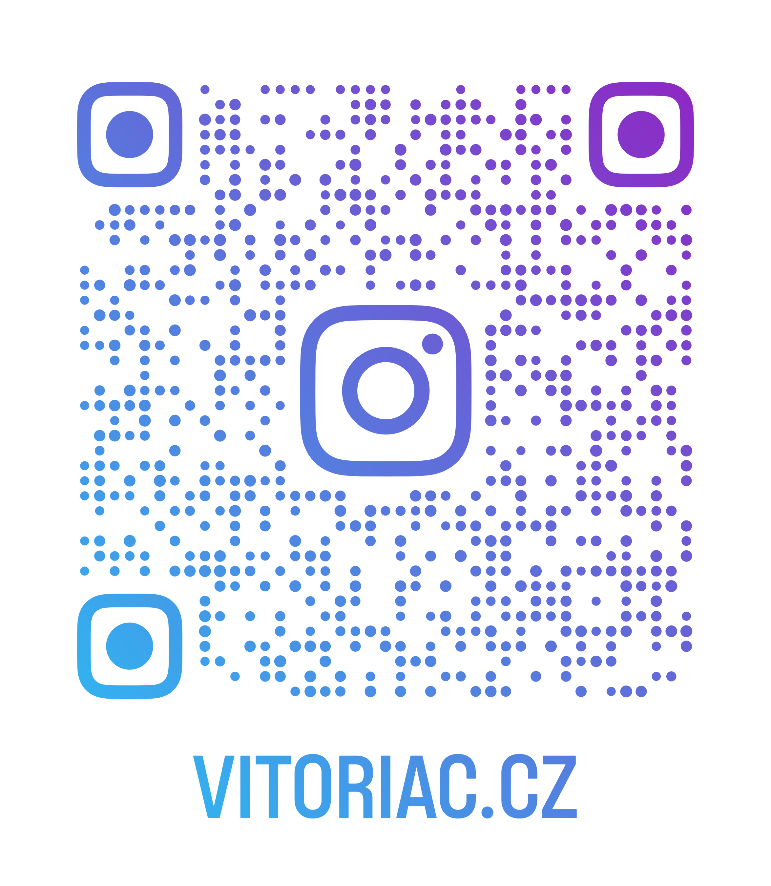

Vitória
Vitória, uma pessoa única.
Vitória é alguém que carrega em seu nome a força que também reflete em sua personalidade. Determinada e dedicada, ela encara desafios com coragem e uma vontade incansável de crescer e evoluir. Seu olhar para o mundo é cheio de empatia, sempre buscando entender e ajudar quem está ao seu redor. Com uma curiosidade natural, Vitória gosta de explorar novos conhecimentos, abraçando cada oportunidade de aprendizado como um passo importante na construção do seu futuro. Além disso, sua generosidade e senso de justiça fazem dela alguém que inspira confiança e admiração. Vitória não apenas sonha alto, mas trabalha com foco e paixão para transformar esses sonhos em realidade. Quem tem o privilégio de conhecê-la sabe que ela deixa sua marca por onde passa, seja com sua inteligência, seu sorriso ou sua energia positiva. Vitória é, sem dúvidas, uma pessoa especial, alguém que o mundo precisa valorizar e celebrar.
Formação: Tecnica em informática pelo IFNMG - Salinas
Cursa psicologia na UFSJ
 Instagram
Instagram